Structure 1: make-sell
Once you have an idea of who the customers are and what the value proposition is, it is time to think about the business model. Or is it already too late? By this point there is usually an implicit business model, and it tends to look the same: the firm makes a product or delivers a service, sells it to the customer and gets paid in return.
The lecture calls this the make-sell business model. It is the classical way of doing business, and many organizations use it for products that may or may not be innovative. Shavers, clothes, TV sets and toys are all sold this way.

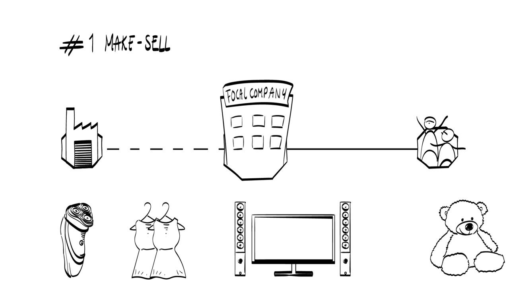
What matters is that a value exchange takes place between the focal organization and an external stakeholder, here the customer. The value created is transferred to the customer, and the focal organization captures value through revenues.
The thing transferred can also be a service. The structure stays make-sell. Car washing at Shell stations is one example, audit services by the big four firms another. For a non-profit such as Unicef or Doctors Without Borders, the exchange becomes a one-way street: a product or service is delivered, and nothing is captured in return.
Many organizations use a different structure to create and capture value. Besides make-sell there are four other alternatives. They are distinct, and they can be combined.
Structure 2: reseller
The focal organization resells goods or services that it buys from numerous suppliers, without making any essential changes to them. This is the original business model of the online retailer Amazon, and of food supermarkets such as Walmart or Albert Heijn.

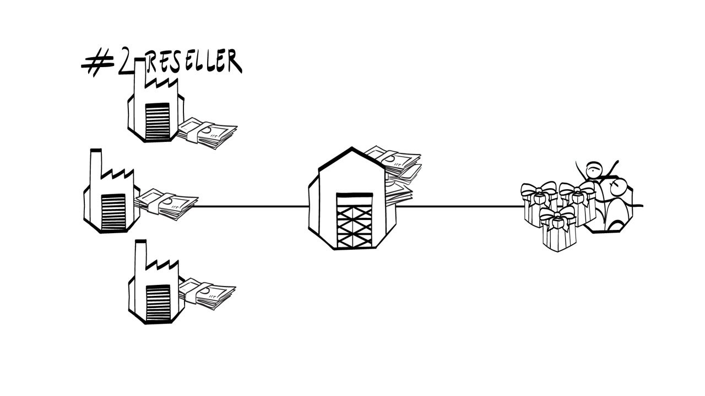
Structure 3: licensing or franchising
This is a fairly powerful way to scale up: the organization licenses its core activities to external parties. The fast food chain McDonald's does it, and so does Repair Café, an organization that helps people repair all kinds of broken things. Both use franchising to attract local entrepreneurs, which lets them expand their geographical coverage substantially.
The local entrepreneurs often pay a licensing fee. In return they get support in setting up and maintaining the business, and an image that people recognize easily. The local entrepreneurs perform the main activities, and the headquarters does not.

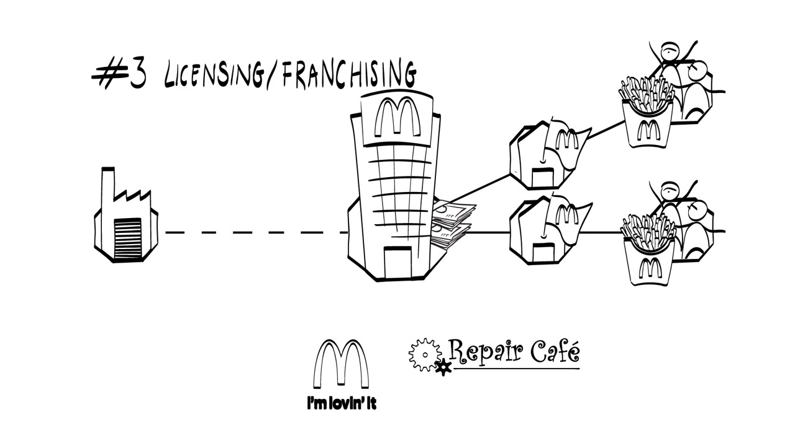
Structure 4: symmetric platform
The hotel site Booking.com, the online marketplace eBay, the peer-to-peer car rental company WhipCar, the industrial equipment rental platform FLOOW2 and the food sharing platform Shareyourmeal all use the symmetric platform business model.
The focal organization hosts a platform that facilitates exchange between at least two distinct types of customers. These are often called the two sides of the market, which gives the name multi-sided platform. Because both sides are equally valuable to each other, the lecture calls it a symmetric multi-sided platform. It is sometimes referred to as a broker business model.

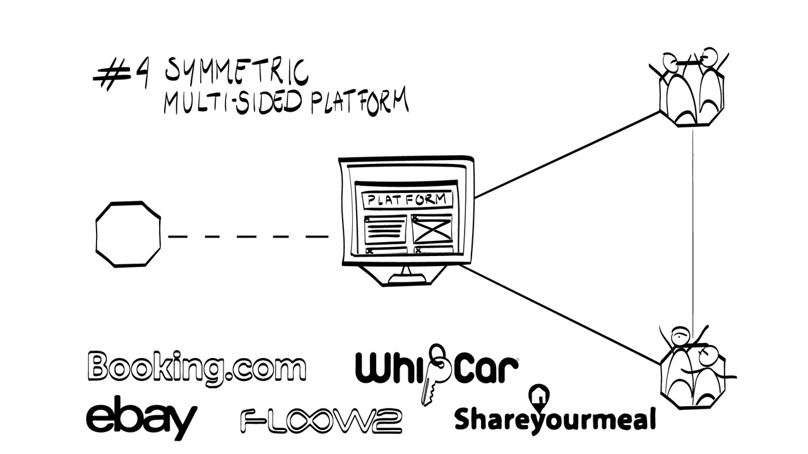
If you want to rent an excavator, you can get one through FLOOW2. FLOOW2 does not own any excavators. It mediates between the owners of expensive industrial equipment and the companies that want to rent machinery, and it does all of this through an online platform. The structure improves how efficiently resources are used, so it helps make the planet a little greener, even though the equipment being rented is not necessarily very sustainable itself.
Structure 5: asymmetric platform
Now drop that exchange between the two sides, or make it less stable. The result is the asymmetric platform business model, the last of the five. In a symmetric platform, one side uses the platform because it gets access to the other side, and vice versa. In an asymmetric multi-sided platform this reciprocity is broken.
Waze
Waze has a free app that offers navigation. That sets it apart from TomTom or Garmin, which earn revenue by selling GPS devices and apps. Its customer base has been growing sharply, so where does the money come from?
Waze uses information provided by drivers to keep live coverage of traffic and of other things that matter on the road, such as obstacles and the locations of speed cameras and policemen. It is free for the first side of the market, the drivers. It then captures value by selling and exchanging the data obtained from drivers with the second side: local governments and road authorities. So Waze does not connect the two sides, as a symmetric platform would. It uses one side to create value for the other.

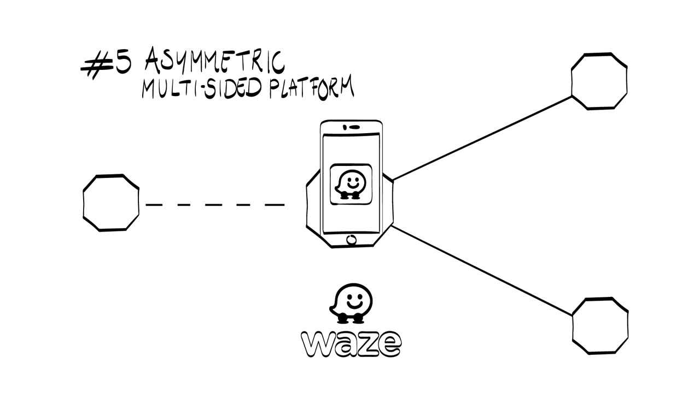
The same logic carries over to a third market. Waze shows targeted, location-based ads to drivers in the app. Companies that want to advertise their local offers pay for these ads, for example McDonald's or the sportswear company Adidas. The asymmetry is there again: drivers do not use Waze because of the ads, but advertisers place ads only because they can reach the drivers.
Other examples
The free newspaper Metro works this way. It is free for readers, which boosts its coverage, and it captures value through paid advertisements. Plastic Whale organizes fishing trips on the canals of Amsterdam to collect plastic waste from the water, then makes and sells plastic boats from that waste. The asymmetric multi-sided platform is also the original business model of Google, so it is no wonder Google bought Waze in 2013.

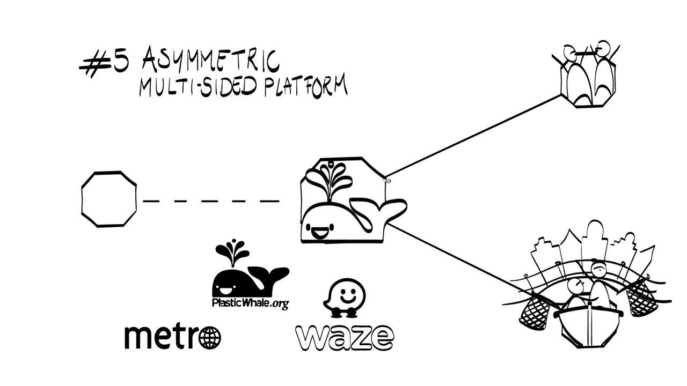
The five structures side by side
There are five basic types of value exchange structure:
- make-sell,
- reseller,
- licensing or franchising,
- symmetric multi-sided platform,
- asymmetric multi-sided platform.

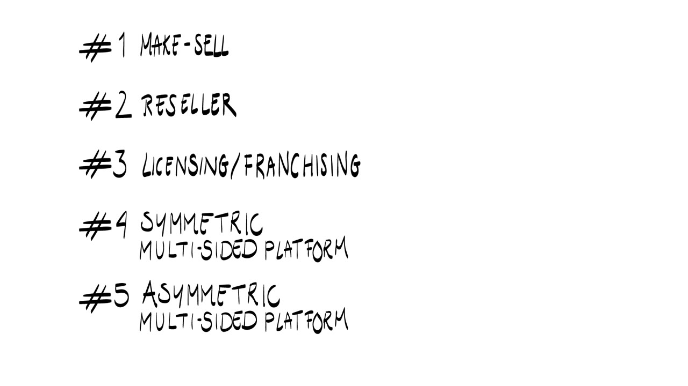
The list does not yet cover everything you need for the business model of a product or service. Besides the structure, you have to think about how and what exactly is transferred between each pair of stakeholders. The lecture adds four add-ons for this: two for the value the organization creates and two for the value it captures.
Two add-ons for value created
Ownership or access
The first add-on distinguishes ownership of the transferred object from access to it. Take a mobile phone. You can buy it as a regular product, or you can get access to it by leasing it from a mobile operator such as Orange or Vodafone. The same can be done with cars, solar panels, LED lamps and even jeans. The customer does not obtain ownership at the start and only acquires the right to use the product for a certain period. Sometimes ownership is transferred when that period ends.
Access is not restricted to leasing. Companies such as FLOOW2 or Car2Go also provide access to equipment and cars, and they do not lease them.
Consumable or durable
The second add-on is about the object itself. Some objects are consumable, meaning they deplete in quantity when used: the coffee or tea you buy to make drinks, credits in Skype, gems and coins in online games. In mobility, the consumable could be credits or minutes of car use, as is customary in car sharing. Other objects do not deplete during use and are called durable. Software packages, new levels in online games and regular products such as lamps or TV sets are durable.

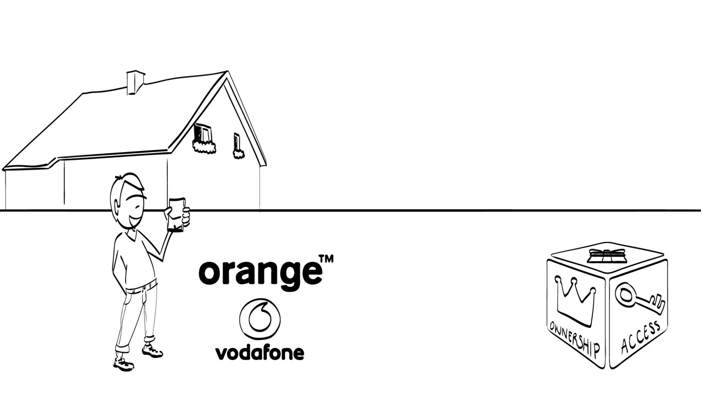

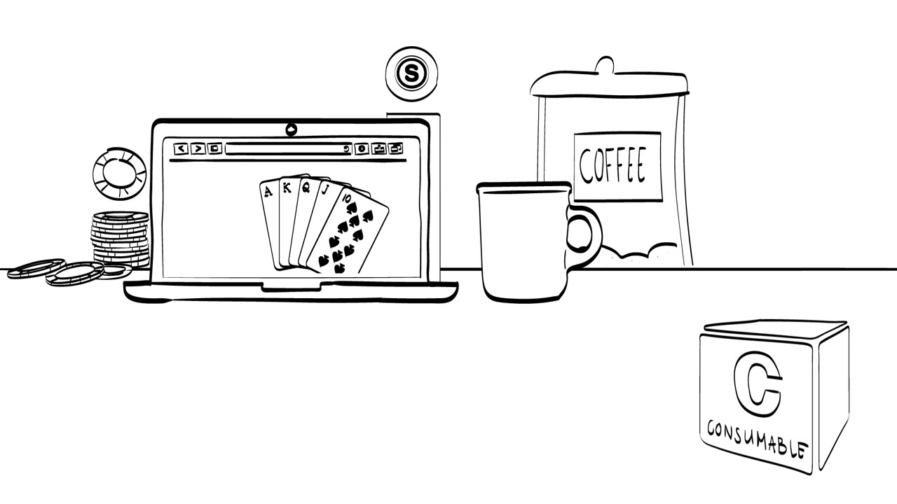
Two add-ons for value captured
One-time or repeated payment
One-time payment is often the default: you get the product or service by paying a certain amount at one point in time. The alternative is a repeated payment, usually called a subscription. Numerous journals use it, and so do the weekly meal plans from HelloFresh, online courses such as those from Babbel, and the file sharing company Dropbox.

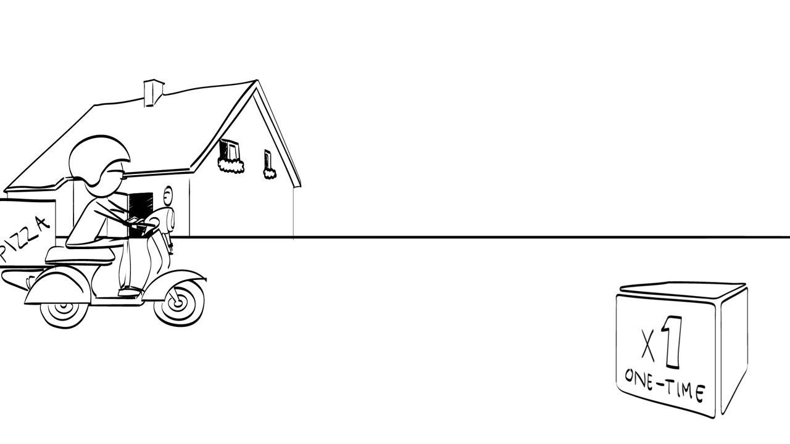

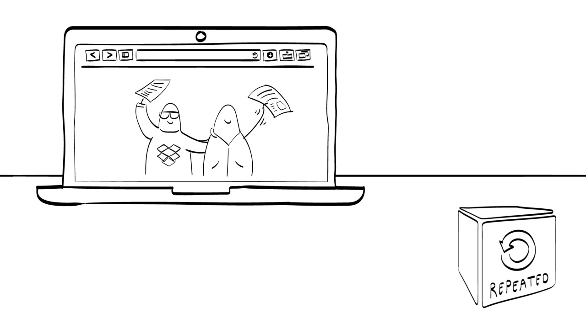
How many objects you pay for
The second add-on deals with how many objects are involved in a transaction and paid for. You can buy one item, which is the most common way. You can buy in bulk. Or you can buy an unlimited amount, as with Netflix or an all-you-can-eat buffet restaurant.
The BE Connect tool
The structures and add-ons together make up the BE Connect tool, short for Business Model Ecosystem Connect tool. Ksenia Podoynitsyna and Meike Brehmer developed it at TU Eindhoven.

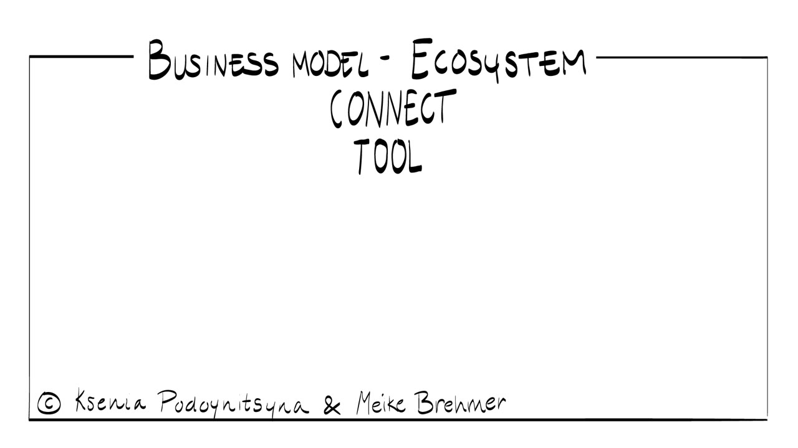
This way of business modelling differs from component-based visualizations, such as the well-known Business Model Canvas of Alex Osterwalder or the ones defined by Morris and colleagues in 2005 and Johnson and colleagues in 2008. The canvas lets you look inside the box, the company. The BE Connect tool looks at the world outside the box. It maps the value exchanges between the focal organization and external stakeholders, which jointly determine how the organization creates and captures value.

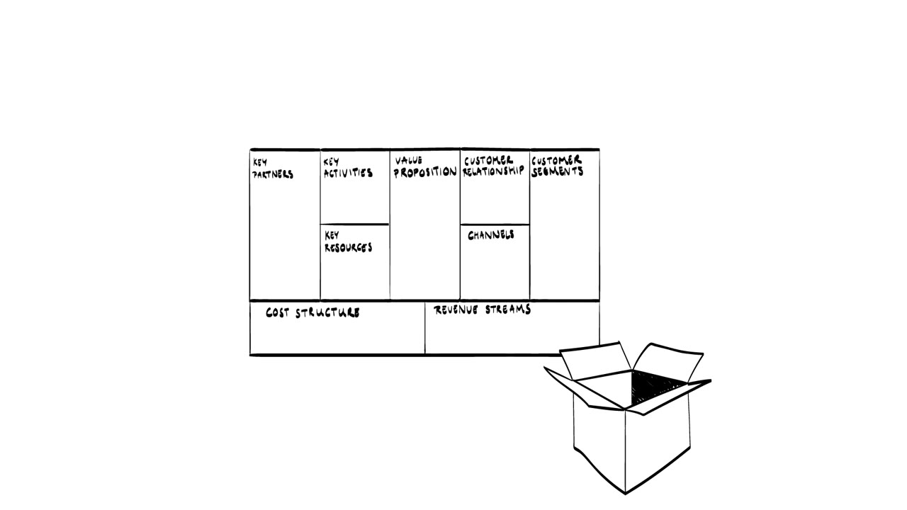

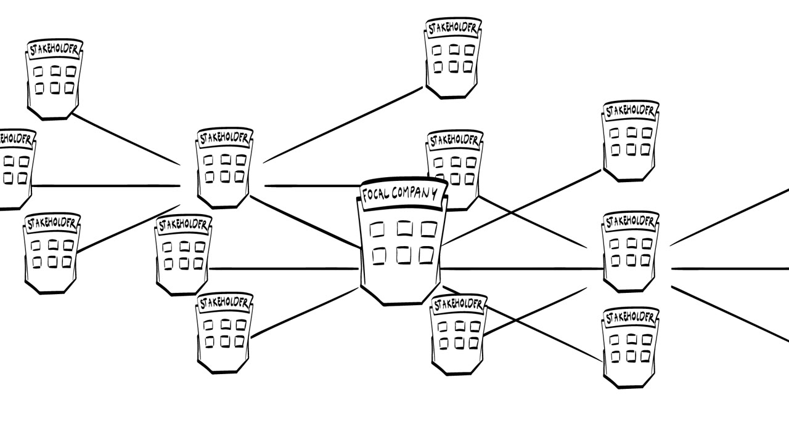
Such value exchanges may go beyond the business model of the focal organization and connect it to the overarching business or innovation ecosystem. That is where the word ecosystem in the name comes from. The tool is versatile: you can map, analyze and ideate business models and ecosystems with it.
Terms to know
- Focal organization
- The organization whose business model you are mapping. It sits in the middle of every diagram, with external stakeholders around it.
- Value exchange
- A transfer between the focal organization and an external stakeholder. Value created goes out, for example to the customer, and value is captured in return, for example as revenue.
- Make-sell business model
- The firm makes a product or delivers a service, sells it to the customer and gets paid in return.
- Reseller business model
- The focal organization resells goods or services bought from numerous suppliers without making essential changes.
- Licensing or franchising business model
- The organization licenses its core activities to external parties. Local entrepreneurs often pay a fee, perform the main activities, and get support and a recognizable image.
- Symmetric multi-sided platform
- A platform that facilitates exchange between at least two distinct types of customers who are equally valuable to each other. Also called a broker business model.
- Asymmetric multi-sided platform
- A platform that does not connect its sides to each other. It uses one side of the market to create value for the other.
- Ownership versus access
- Value-creating add-on. The customer either becomes the owner of the object or only gets the right to use it for a period, by leasing or otherwise.
- Consumable versus durable
- Value-creating add-on. A consumable object depletes in quantity when used, and a durable one does not.
- One-time versus repeated payment
- Value-capturing add-on. A single payment at one point in time, or a subscription.
- Item, bulk or unlimited
- Value-capturing add-on. How many objects a transaction covers and the customer pays for.
- BE Connect tool
- The Business Model Ecosystem Connect tool from TU Eindhoven. It maps value exchanges between the focal organization and external stakeholders, where the Business Model Canvas describes the inside of the company.